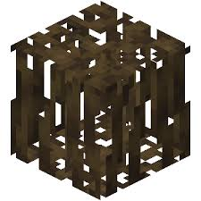

Welcome to the Updated 2024 Minecraft Wiki made by Muddy Mangrove Roots
Updated at 2/7/2024 1:44pm
Welcome to the ultimate guide to Minecraft, where you can embark on an epic journey through blocky landscapes, endless adventures, and boundless creativity. Whether you're new to the game or a seasoned explorer, our wiki is your gateway to mastering every facet of Minecraft.
Explore the World:
Discover the diverse biomes, from lush forests to expansive deserts, and unravel the mysteries of Minecraft's dynamic world generation. Learn how to navigate caves, mine precious resources, and harness the power of Redstone to automate your creations.
Master Crafting and Building:
Unlock the secrets of crafting with our comprehensive guides. From basic tools to enchanted weapons and armor, our wiki provides step-by-step instructions to help you become a crafting expert. Dive into advanced building techniques and architectural styles to create stunning structures that stand out in any Minecraft world.
Survive and Thrive:
Survival in Minecraft is not just about avoiding monsters and hunger; it's about thriving in a challenging environment. Learn effective strategies for farming, fishing, and breeding animals to sustain yourself and build thriving communities.
Mods and Addons:
Extend your Minecraft experience with mods and addons. Dive into the vibrant modding community to enhance gameplay with new features, mechanics, and content. Whether you're interested in adding new creatures, exploring custom dimensions, or tweaking gameplay mechanics, our wiki covers the best mods and addons to enrich your Minecraft adventures.
Community and Collaboration:
Join a passionate community of Minecrafters from around the globe. Share your creations, participate in collaborative projects, and engage in discussions about updates and game strategies. Connect with fellow players to exchange ideas, tips, and stories from your Minecraft journey.
Get Started:
Whether you're building your first dirt hut or constructing a sprawling castle, our wiki provides the tools and knowledge to turn your Minecraft dreams into reality. Begin your adventure today and immerse yourself in the endless possibilities of Minecraft!